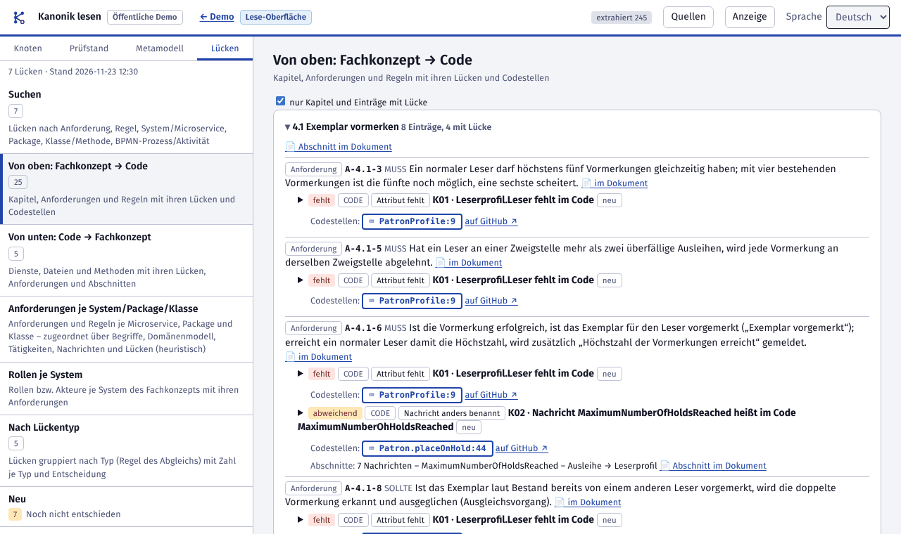
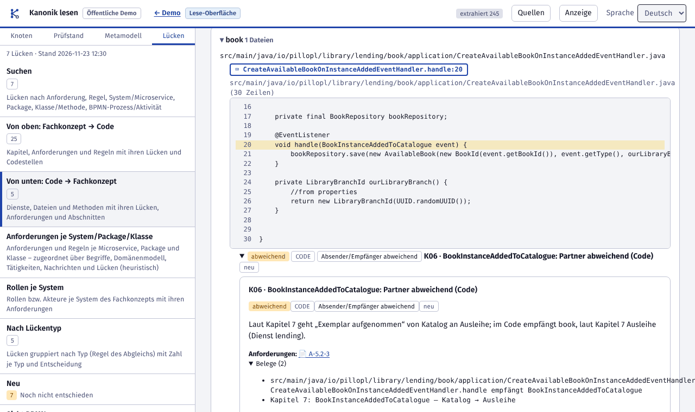

Bibliothek: Ausleihe
Vormerken, Ausleihen, Rückgabe und Katalog – Fachkonzept gegen ein Domänenmodell nach DDD mit Aggregaten und Ereignissen in Java.
Steckbrief
Ganzer Steckbrief in der Lese-Oberfläche →
Wie dieses Beispiel entstand
Auswahl
Ein Projekt ohne BPMN, dafür mit sorgfältigem Domänenmodell: ddd-by-examples/library (Java, Spring, modularer Monolith, DDD mit Aggregaten und Domänenereignissen). Hier wird die Domänenseite des Abgleichs geprüft: Regeln, Invarianten und Ereignisse des Fachkonzepts gegen Aggregate und Ereignisse im Code.
Vorbereitung
Das Fachkonzept haben wir für diese Demo nach der Domänenbeschreibung und den EventStorming-Ergebnissen des Projekts geschrieben und gegliedert: Abläufe der Ausleihe, Geschäftsregeln, Domänenmodell, Nachrichten. Festgelegt wurden der Commit des Codes und die Liste erwarteter Lücken (Testorakel). Die Extraktion durch ein Sprachmodell wurde geprüft und übernommen; jeder weitere Lauf ist ohne Sprachmodell wiederholbar.
Was Kanonik gemacht hat
Kanonik hat das Fachkonzept in einen Wissensgraphen übersetzt und den Code gelesen: Klassen, Aggregate, erzeugte und empfangene Domänenereignisse (@EventListener), REST-Endpunkte. Aus dem Code entstanden eine OpenAPI-Beschreibung (Leserprofil) und eine AsyncAPI-Beschreibung der Spring-Ereignisse mit Verweis auf jede Codestelle. Eine Zuordnung Fachkonzept → Code zeigt Anforderungen und Regeln je Dienst, Package und Klasse; der Abgleich ergibt die Lückenliste, gemessen am Testorakel.
Geführte Tour
- Das Fachkonzept
Kapitel 4 beschreibt die Abläufe der Ausleihe – vom Vormerken eines Exemplars (A-4.1-1) bis zur Rückgabe; Kapitel 6 die Geschäftsregeln, Kapitel 8 das Domänenmodell. →
- Die Lücken
Der Abgleich findet Ereignisse, die das Fachkonzept verlangt, die der Code aber nie veröffentlicht – etwa die Rückgabe eines Exemplars. →
- Vom Befund zur Stelle
Jede Anforderung und Regel in der Lückenliste öffnet das Fachkonzept an der Belegstelle. →
Fachkonzept ansehen
Lücken
8 Lücken zwischen Fachkonzept, BPMN und Code
Architektur (ArchiMate)
Enterprise-Architektur der Domäne nach ArchiMate 3.2, abgeleitet aus Fachkonzept und Schnittstellen: 296 Elemente, 930 Beziehungen.
Diagramm nach Schichten ansehen →
model.xml für Archi herunterladen (Datei → Importieren → Open Exchange XML Model)
Schnittstellen aus dem Code
Das Projekt hat keine Schnittstellenbeschreibung. Kanonik hat sie aus dem Quelltext erzeugt: OpenAPI für REST, AsyncAPI für Ereignisse und Nachrichten. Jedes Element verweist auf seine Codestelle (x-kanonik-code).
7 REST-Operationen, 23 Ereignis-Operationen, 13 Nachrichten →
Graph und Suche (Lese-Oberfläche)
Graph und Suche (Lese-Oberfläche) →
Quellen und Rechte
Fachkonzept für diese Demo geschrieben, nach der Domänenbeschreibung des Projekts; Code aus ddd-by-examples/library (MIT).